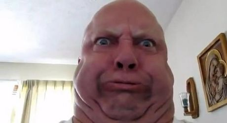
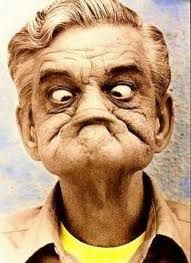
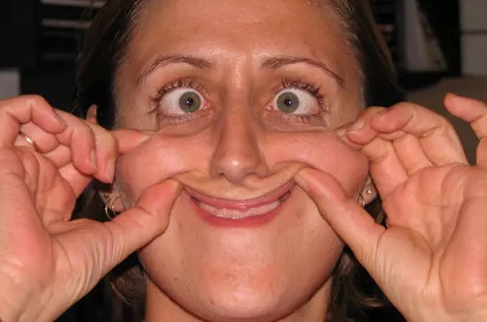
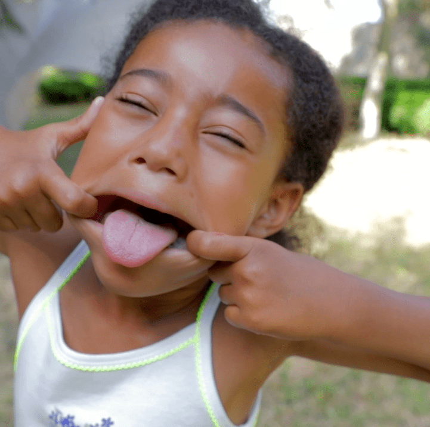
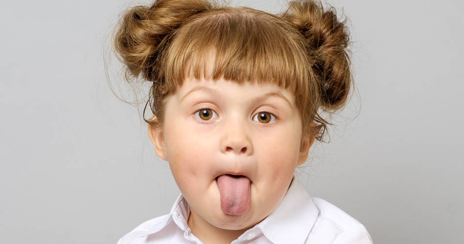

| 1 |
Multiple menton |
Elle est drôle mais elle fait un peu peur en même temps |
Qualités physiques indispensables |
8 |
 |
| 2 |
Assez difficile à décrire |
Plutôt drôle |
Il aut être souple |
9 |
 |
| 3 |
Bouche en forme de lune plus les yeux qui louchent |
Réalisation accessible et elle garantit l'anonymat sur une photo |
Creepy |
3 |
 |
| 4 |
Tirage de langue avec grande ouverture de la bouche |
Simple et efficace |
Manque d'originalité |
2 |
 |
| 5 |
Simple tirage de langue | -->
1 |
 |